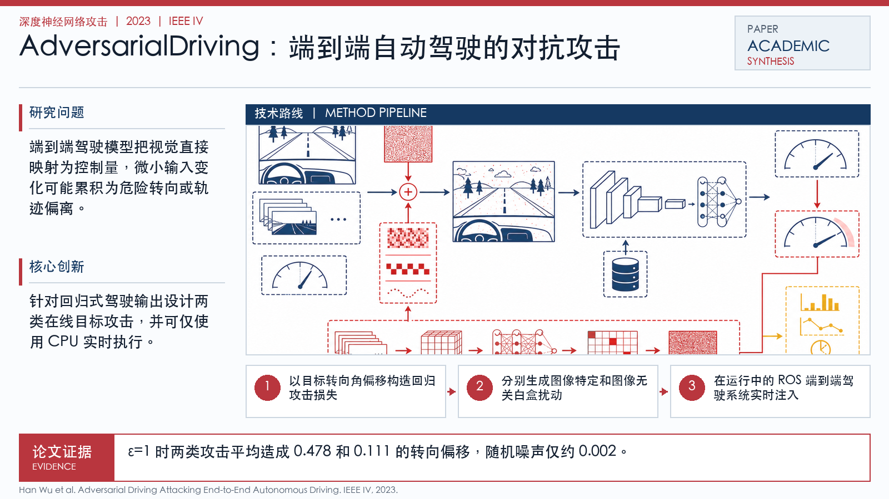

Problem
解决的问题
端到端驾驶模型把视觉直接映射为控制量，微小输入变化可能累积为危险转向或轨迹偏离。
Attacking on DNNs · 2023 · IEEE IV
Adversarial Driving Attacking End-to-End Autonomous Driving
Problem
端到端驾驶模型把视觉直接映射为控制量，微小输入变化可能累积为危险转向或轨迹偏离。
Value
ε=1 时两类攻击平均造成 0.478 和 0.111 的转向偏移，随机噪声仅约 0.002。
Paper-grounded Academic Summary
该代表页依据原文摘要、贡献段与方法图注生成。方法视觉由 ImageGen 按论文证据逐篇绘制，中文研究问题、技术路线、创新点与实验结论采用确定性排版，以保证内容与字符准确。
打开原文 PDF
Technical Route
Innovation